|
|
|
| Ana
Sayfa | Önceki Sayfa
| Sonraki Sayfa |
Uygulama Sahalarý
> Mühendislik > Hýzlý Kalýp Ýmalatý:
Yeni ürün geliþtirme kapsamýnda
hýzlý kalýp imalatý sayesinde, olabilecek tasarým hatalarý
kýsa zamanda teþhis edilerek ürün en kýsa sürede piyasaya
çýkarýlabilir. Plastik enjeksiyon ve diðer kalýplar rekor
zamanda ve hatasýz üretilebilir. Otoinþa teknolojilerinin
hýzlý kalýp imalatý amacýyla kullanýlmasý üç madde altýnda
incelenebilir:
1- Direkt
metal kalýp inþasý
2- Direkt
kalýp inþasý (metal harici malzemeler)
3- Dolaylý
metal kalýp imalatý |
|
1-
Direkt metal kalýp inþasý:
Bu, otoinþa teknolojisinin
en çok ilgi çeken ve gelecek vadeden uygulamalarýndan
birisidir. Direkt metal malzeme kullanabilen ve çoðu
hýzlý kalýp imalat sektörünü de hedeflemiþ olan otoinþa
cihaz ve teknolojileri, firma ismi alfabetik sýrasýna
göre aþaðýdaki tabloda sunulmuþtur.
|
Firma, Kuruluþ
|
Proses, Marka
/ Model
|
Ana Teknoloji
> Alt Teknoloji
|
Ülke
|
| 3D
Systems Corp. |
SLS Sistemleri |
Toz Baðlama > Isýtarak |
ABD |
| Aeromet |
Lasform |
Harç Yýðma > Püskürterek |
ABD |
| Arcam
AB |
EBM |
Toz Baðlama > Isýtarak |
Ýsveç |
| CAM-LEM,
Inc. |
CL-100 |
Tabaka Yýðma >
Kes + Yapýþtýr |
ABD |
| Concept
Laser GmbH |
LaserCUSING |
Toz Baðlama > Isýtarak |
Almanya |
| EOS
GmbH |
EOSINT |
Toz Baðlama > Isýtarak |
Almanya |
| Extrude
Hone |
ProMetal 3DP |
Toz Baðlama > Yapýþtýrýcýyla |
ABD |
| H
& R Technology Inc. |
PMD |
Harç Yýðma > Püskürterek |
ABD |
| MCP-HEK
GmbH |
MCP-REALIZERSLM |
Toz Baðlama > Isýtarak |
Almanya |
| Optoform
LLC |
DCM |
Iþýkla Kür > Tarayarak |
ABD |
| Optomec |
LENS |
Harç Yýðma > Püskürterek |
ABD |
| Phenix
Systems |
PHENIX 900 |
Toz Baðlama > Isýtarak |
Fransa |
| POM |
DMD |
Harç Yýðma > Püskürterek |
ABD |
| Solidica |
Ultrasonic Consolidation |
Tabaka
Yýðma > Yapýþtýr + Kes |
ABD |
| Speed
Part AB |
IMS |
Toz Baðlama > Isýtarak |
Ýsveç |
| TRUMPF |
LF
- Laserforming |
Toz
Baðlama > Isýtarak |
Almanya |
| TRUMPF |
DMD |
Harç
Yýðma > Püskürterek |
Almanya |
|
|
Aþaðýda, direkt metal
inþasý ile üretilen kalýp örnekleri bulunmaktadýr:
| Aþaðýda,
Concept Laser GmbH, LaserCUSING
sistemleriyle üretilmiþ kalýp yüzeyiyle uyumlu geometriye
sahip soðutma kanallarýyla (conformal cooling) birlikte
inþa edilmiþ kalýp mührelerine (insert) ait iki
örnek görülmektedir. Kanallarýn görülebilmesi için
inþa sonrasýnda parçalarýn kesiti alýnmýþtýr:
|
|
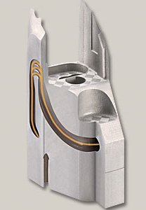
|
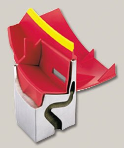
|
|
Boyut:
50 x 58 x 96 mm
Malzeme: CL 50 WS
(sýcak iþ kalýp çeliði - Hot work tool steel)
Sertlik: 54 HRC
Üretim süresi: 33 saat
|
Boyut:
52 x 40 x 55 mm
Malzeme: CL 50 WS
(sýcak iþ kalýp çeliði - Hot work tool steel)
Sertlik: 54 HRC
Üretim süresi: 29 saat
|
|
|
|
TRUMPF
GmbH
/
DMD
505 tezgahýnda bakýr blok üzerinde üretilmiþ bir
kalýp
|
Kalýp
onarým-ekleme sonucu bir parça
|
|
|
|
TRUMPF
GmbH
/ Laserforming
tezgahýnda ile soðutma kanallý þekilde inþa edilmiþ
kalýplar
|
|
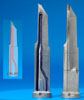
Saðda:
MCP-HEK
GmbH
/ SLM
cihazýnda metal
tozlarýyla inþa
edilmiþ içinde soðutma kanallarý býrakýlarak inþa
edilmiþ metal bir kalýp parçasýnýn 3D CAD resmi,
kendisi ve kesiti alýnmýþ hali görülmektedir.
|
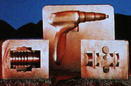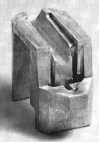
Solda: 3D Systems
SLS Rapid
Tool teknolojisi ile metal tozlarýnýn sinterlenmesiyle
oluþturulan kalýplar.
Saðda: Benzer bir
teknoloji, EOS GmbH / EOSINT
ile yapýlmýþ kalýp mühresi.
|
|
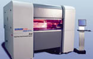Extrude
Hone / ProMetal, 14-11-2002 tarihinde yaptýðý
bir basýn duyurusu ile R10 Sistemi ile ismi açýklanmayan
bir otomotiv üreticisine 740mm x 500mm x 60mm ölçülerinde
bir metal kalýp (lost-foam tool) ürettiðini duyurmuþtur.
Metal döküm prosesinde kullanýlacak polistren köpük
modellerin enjeksiyonla basýlmasýnda kullanýlacak
bu kalýp otoinþa teknolojisi ile tek parça halinde
üretilen en büyük metal kalýp olmuþtur.
Yukarýda
solda, MIT'nin 3DP
(üç boyutlu yazýcý) yöntemi ile inþa edilmiþ plastik
enjeksiyon kalýbý görülmektedir. Ýnþa sýrasýnda kalýp
içerisinde karmaþýk soðutma kanallarý da býrakýlmýþtýr.
Saðda, bu kalýp kullanýlarak üretilmiþ plastik parçalar
görülmektedir. (Bu teknoloji daha sonra PromMetal
tarafýndan ticari hale getirilmiþtir).
|
| 2-
Direkt kalýp inþasý (metal harici malzemeler):
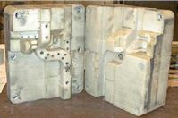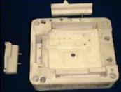
Yukarýda görülen,
D-MEC
Ltd.-SONY cihazlarýyla SCR802
isimli takviyeli fotopolimer reçinesiyle ile imal edilmiþ
kalýplar 100-200 adet ABS parçayý plastik enjeksiyon
makinesinde üretebilecek dayanýma sahiptirler. Saðda
görülen maçalý kalýp SONY/Mavica dijital fotoðraf makinesi
prototiplerini basmak için üretilmiþtir.
|
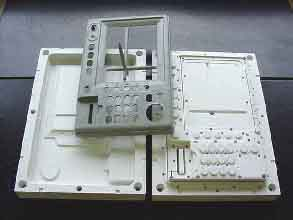
Saðda: CMET
(SOUP, Soliform) sistemine ait, mukavemet takviyesi
için seramik tozlarýnýn karýþtýrýldýðý TSR
1971 isimli bir tip fotopolimer reçine ile 50-100
adet plastik basýlabilecek enjeksiyon kalýbý direkt inþa
edilebilir. Görüldüðü gibi, toz katký sebebiyle fotopolimer
mat beyaz renklidir. |
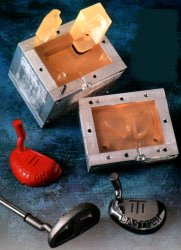
Saðda: SLA ile
imal edilmiþ mum basma kalýbý, bu kalýp kullanýlarak
elde edilmiþ mum model (kýrmýzý) ve mum model kullanýlarak
hassas dökümle imal edilmiþ metal golf sopasý kafasý.
Resmi daha büüyük görmek için týklayýnýz.
|
|
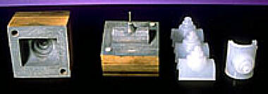
Helisys/ LOM teknolojisi
ile inþa edilmiþ kalýp, sert ahþap özelliðindedir ve kýsa
ömürlü plastik enjeksiyon kalýbý olarak kullanýlabilir.
Saðda, basýlmýþ plastik parçalar görülmekte. |
| 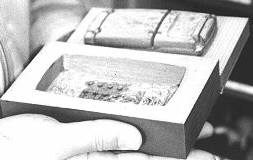Saðda:
Kira/ SAHP teknolojisi ile inþa edilmiþ kalýp, sert ahþap
özelliðindedir ve kýsa ömürlü plastik enjeksiyon kalýbý
olarak kullanýlabilir. |
|
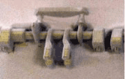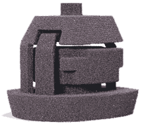
Yukarýda, EOSINT S 700
cihazýnda özel bir çeþit maça kumunun sinterlenmesi ile
elde edilmiþ kompleks kum döküm kalýp maçalarý görülmektedir.
Bu sayede döküm parçalarýn prototipleri (maça kalýbý imal
edilmesine gerek kalmadan) çok kýsa sürede elde edilebilmektedir. |
| 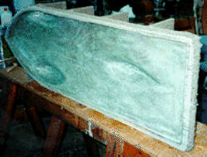Saðda:
Formus firmasýnýn küresel partiküllerden oluþmuþ ince
kumu katman katman mumun püskürtülmesiyle yapýþtýrark
imal ettiði bir kalýp. Bu kalýp Harvard Üniversitesi'nde
yürütülen bir proje çerçevesinde imal edilen ve güneþ
enerjisiyle çalýþacak aerodinamik yapýlý bir aracýn fiberglas
gövdesinin üretiminde kullanýlacaktýr. Formus firmasýnýn
otoinþa cihazý ucuz bir hammadde ve basit bir teknoloji
kullandýðýndan özellikle büyük parçalarýn modellenmesi
için uygundur... |
3-
Dolaylý metal kalýp imalatý:
Hýzlý metal kalýp imalatý
için direkt otoinþa teknolojilerinin kullanýmý yanýnda,
otoinþa ile üretilmiþ düþük mukavemetli modeller yardýmýyla
benzer geometriye sahip fakat daha mukavemetli kalýp üretimi
(dönüþtürme teknikleri, conversion technologies)
konusunda birçok teknoloji mevcut ve geliþtirilmektedir.
Bu konu hakkýnda daha fazla bilgiye raporun sonunda eriþilebilir:
Ek Bilgi > Model Dönüþüm Teknolojileri
Aþaðýda, hassas
dökümle yapýlmýþ bir uygulama görülmektir:
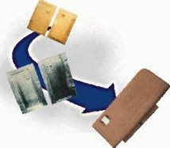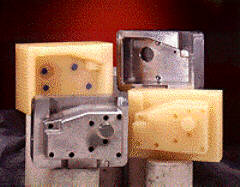
Yukarýda: SLA
ile inþa edilmiþ modeller kullanýlarak hassas
dökümle imal edilmiþ bu plastik enjeksiyon kalýplarý
Ford firmasýnda kullanýlmýþtýr. Sarý olan parçalar QuickCast
stiliyle üretilmiþ fotopolimer model. Diðer ikisi ise
çelik döküm kalýp parçalarýdýr. Her ne kadar bu kalýp
CNC tezgahlarla yapýlmýþ kadar hassas ölçülerde olamasa
da hýzlý üretilebilmesi ve kaput altýnda kalan ve nispeten
kaba plastik parçalarýn imal edilmesi için idealdir.
Bu tip uygulamalarda hassasiyeti korumak için döküm
sýrasýndaki deformasyonlarý önceden tahmin ederek üretilen
modelin tasarýmýný, hatalarý kompanse edecek þekilde
deðiþtirebilecek geliþmiþ bilgisayar programlarýna ihtiyaç
vardýr. Aksi halde en az birkaç deneme yanýlma yapýlmasý
gerekebilir.
|
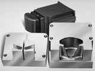
Saðda: FDM teknolojisi
ile inþa edilmiþ mum modeller kullanýlarak hassas döküm
ile üretilmiþ çelik kalýp parçalarý. |
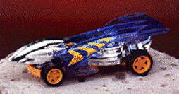
Saðdaki oyuncak
otomobil modelinin parçalarý normalden 3 kat büyük bir
þekilde SLA ile üretildikten sonra kopya frezeyle (pantograf)
3 kez küçültülerek hassas bir þekilde metal kalýp iþlenmiþtir. |
| Ana
Sayfa | Önceki Sayfa
| Sonraki Sayfa |
|
|